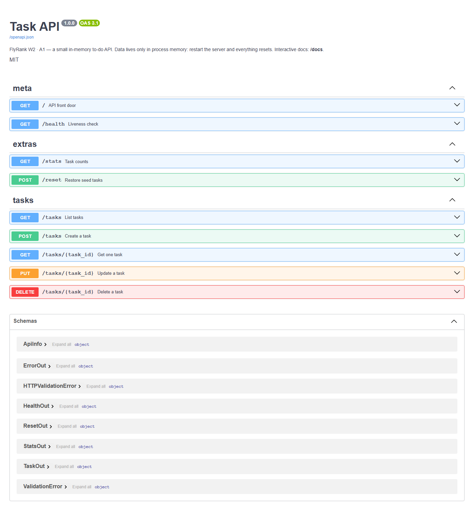

A1 · In-memory FastAPI · FlyRank W2
Task CRUD API
A small to-do CRUD API with Swagger, filters, pagination, stats, and honest 404s. Restart clears memory on purpose; Week 3 moves the shelf to SQLite.

Surface
| Method | Path | Meaning |
|---|---|---|
GET | /health | Liveness |
GET | /tasks | List with filters |
POST | /tasks | Create · 201 |
PUT | /tasks/{id} | Update title / done |
DELETE | /tasks/{id} | Delete · 204 |
GET | /stats | total / done / open |
Try a miniature desk
Client-side mock of the A1 shapes so reviewers can poke the UX without a local server.